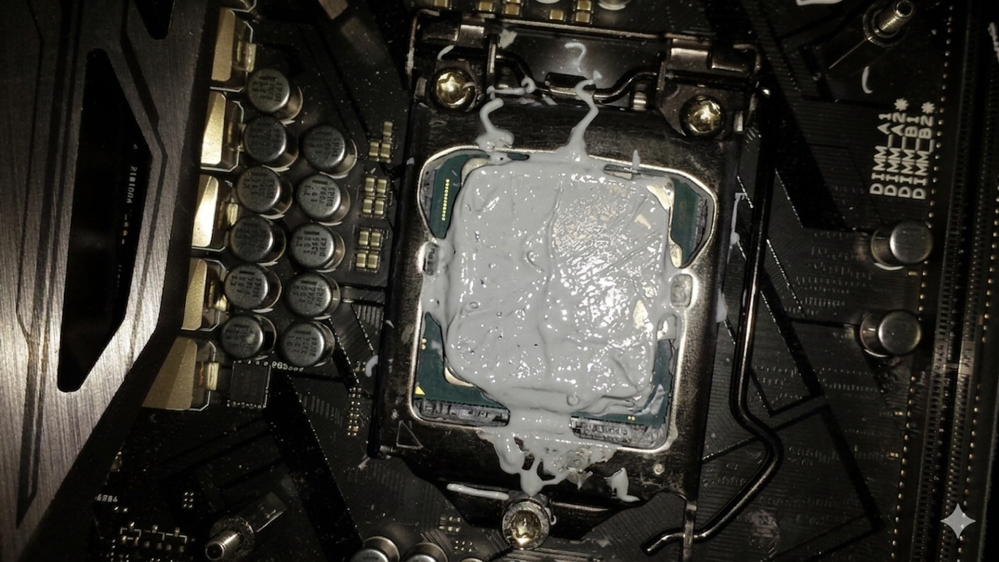

PC Building Disaster-"The thermal paste tsunmai"

Every builder's rite of passage.
You've watched 47 Linus Tech Tips videos, read the manual (lol jk), and you're ready to ascend.
But one squeeze of that thermal paste tube and suddenly your CPU looks like a glazed donut.
Congratulations, you've created a modern art piece that will thermal throttle itself into oblivion
Ingredients
- 1x shiny new CPU (Ryzen or Intel, your choice of regret)
- 1 tube of thermal paste (the whole tube, apparently)
- 1x CPU cooler with mounting anxiety
- 1x motherboard with fragile pins you WILL bend
- RGB everything (because FPS = Frames Per Second + Fancy Pretty Shiny)
- A screwdriver that will 100% slip and scratch your motherboard
Steps
- Unbox everything on carpet while wearing socks. Static electricity is a myth, right?
- Apply thermal paste like you're frosting a wedding cake. More is more.
- Drop the CPU into the socket. The triangle alignment is just a suggestion.
- Install the CPU cooler with the protective plastic still on. It adds character.
- Cable manage by stuffing everything behind the motherboard tray. If the side panel closes, you win.
- Press power. Hear a pop. Smell ozone. Realize the 24-pin wasn't fully seated.
- Spend 3 hours troubleshooting. It was the RAM in slot 2 the whole time. You are a god.
Home